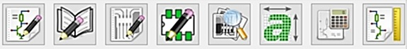

En el documento actual se detalla la actividad que se hizo en la semana 9. También se explicará sobre una herramienta útil al momento de diseñar una placa de circuito impreso: KiCad.
En esta semana, se continuó realizando el cuarto paso del Design Thinking (Prototipar). Con el objetivo de tener claro la manera en la cual se interconectarán eléctricamente los módulos principales y secundarios de un prototipo es necesario el diseño de una placa de circuito impreso.
Una placa de circuito impreso (del inglés: Printed Circuit Board, PCB) es una plancha de material rígido aislante, cubierta por unas pistas de cobre en una de sus caras o en ambas, para servir como conductor o de interconexión eléctrica entre los distintos componentes que se montarán sobre ella. (1) Como se puede ver una placa de circuito impreso constituye una parte esencial del prototipo. Sin embargo, al momento de diseñar esta se puede incurrir en varios errores. Por ello existen muchos programas los cuales facilitan este diseño entre los más importantes están: KiCad, EasyEDA, PCB, gEDA, TinyCAD, etc. En el proyecto actual se utilizó la herramienta llamada: KiCad.
KiCad proporciona muchas ventajas respecto a otros programas entre los cuales los más importantes son: (2) • KiCad puede considerarse lo suficientemente maduro como para ser utilizado en el desarrollo exitoso y mantenimiento de tarjetas electrónicas complejas. • KiCad no presenta ninguna limitación en cuanto al tamaño de la placa de circuito y puede gestionar fácilmente hasta 32 capas de cobre, hasta 14 capas técnicas y hasta 4 capas auxiliares. • Al ser de código abierto (licencia GPL), KiCad representa la herramienta ideal para proyectos orientados a la creación de equipos electrónicos con estilo open-source.
KiCad es un paquete de software de código abierto para Electronic Design Automation (EDA). Los programas manejan la captura esquemática y el diseño de PCB con salida de Gerber. La suite se ejecuta en Windows, Linux y macOS y tiene licencia bajo GNU GPL v3. (3) KiCad es una colección de subprogramas cuyos iconos se muestran a continuación: (4)
De izquierda a derecha, los primeros 5 programas son: • eeSchema: un programa de captura esquemática • Editor de la biblioteca: un programa para crear símbolos esquemáticos • PCBnew: una herramienta de diseño de PCB • Footprint Editor: un programa para crear huellas de PCB • Gerbview: un programa para inspeccionar archivos Gerber
Para obtener el diseño de una placa de circuito impreso se deben realizar diferentes procesos los cuales son: (4) 1. Elaboración del esquema electrónico: En este proceso se usa el sub programa Eeschema. • Inicie eeSchema desde la ventana principal de KiCAD. • Haga clic en el icono de Configuración de página en la barra de herramientas superior. Y Establece el tamaño de papel apropiado. • Haga clic en algún lugar de la hoja. Debería obtener el cuadro de diálogo elegir componente. En tal cuadro ingrese el nombre del componente que desea ingresar dentro del esquema. Elija el componente requerido y pulse Aceptar. • Su cursor ahora tendrá el componente adjunto. Haga clic izquierdo en algún lugar de la hoja para soltar el componente. El objeto en la hoja se llama el símbolo del componente. Puede agregarle un valor al componente haciendo clic izquierdo en el símbolo y apretando editar componente - valor. • Vaya agregando de forma similar todos los componentes que le sean necesarios. En caso no encuentre el componente que está buscando puede crear su propio símbolo y agregarlo desde una biblioteca personal. • Ordene todos los componentes en la hoja. Al hacerlo es momento de realizar las conexiones entre los componentes. Primero colocaremos banderas de No Conexión en los pines que no usaremos. • Al hacer clic con el botón izquierdo en un pin se inicia un cable, al hacer clic con el botón izquierdo en otro pin se termina el cable. Hacer clic izquierdo en otro lugar agrega un punto de inflexión al cable. Hacer doble clic termina un cable incluso si no está en un alfiler. Aparecerá una burbuja de nodo donde los cables cruzados están conectados y no en un pin. Dos cables cruzados sin una burbuja de nodo no están conectados • Podemos notar que los componentes tienen un símbolo “?”. Los “?” representa un número desconocido. Puede agregarlos a mano si desea darles números específicos por algún motivo. Sin embargo, hay una forma automática de hacerlo. Hacer clic en herramientas- anotar esquema. Luego de ello seleccione las condiciones que desea y haga click en anotar. 2. Asignación de huellas: En este proceso se usa la herramienta Asignar huellas de componentes. • En caso no se tengan todas las huellas necesarias para elaborar el esquema en la librería, se puede crear una huella propia con el subprograma Footprint Editor. • En caso se tengan todas las huellas necesarias, presionamos en “Asignar huellas de componentes”. Al hacer ello nos saldrá un recuadro el cual esta dividido en tres columnas. En la primera columna (de izquierda a derecha) están las librerías que contienen las huellas de componentes, en la segunda columna están los componentes creados previamente en el esquema y en la tercera columna están los tipos de huellas que hay en cada librería. • Se asigna un tipo de huella para cada componente en el esquema elaborado. Al terminar presionamos el botón de Guardar cambios. Luego de ello, presione en la herramienta “realizar una verificación de reglas eléctricas” en la que verificamos que no salga ningún mensaje de error. • Por último, presionamos en la herramienta “generar lista de redes” y presionamos en el botón “generar” y guardamos el archivo. 3. Diseño de PCB: En este proceso se usa el subprograma “PCBnew” • Desde la ventana principal de KiCAD, inicie PCBnew, use el icono “Ejecutar PCBnew”. • Una vez que se inicia PCBnew: vaya a la herramienta “Lista de redes (netlist)”, busque la lista de red previamente creada y presione en el botón “leer la lista de redes actual”. • Al hacer lo anterior, las huellas seleccionadas aparecerán en el esquema de forma desordenada. Ordene de manera que sea fácil conectar los componentes del prototipo. • Luego de ello dibuje las líneas que unen los componentes si quiere dibujarlas por encima utilice el modo FCU y si quiere dibujarlas por debajo utilice el modo BECU. • Por último, presionamos en “agregar línea gráfica” al hacer ello dibuje el contorno del PCB. Hacemos doble click una vez que se haya terminado, se debe asegurarse de que el contorno termina en el mismo lugar en el que empezó. Vamos a la herramienta “Visor 3D” en donde podemos ver el diseño final del PCB.
1. Salas R, Pérez JF, Ramírez J. Tecnicas De Diseño, Desarrollo Y Montaje De Circuitos Impresos. Esc Negocios EDN [Internet]. 2017;3(March):45–9. Available from: http://www.saber.ula.ve/bitstream/123456789/26205/1/tecnicas_diseno.pdf 2. Jahshan D, Hutchinson P, Tappero F, Jarron C, Berg M van den. Guía Esencial y concisa para dominar KiCad en el desarrollo exitoso de sofisticadas placas de circuito impreso. 2015 3. Sobre KiCad | KiCad EDA [Internet]. [cited 2019 Nov 1]. Available from: http://www.kicad-pcb.org/about/kicad/ 4. Tutorial de PCB de KiCAD | BA Bryce [Internet]. [cited 2019 Nov 1]. Available from: http://babryce.com/kicad/tutorial.html